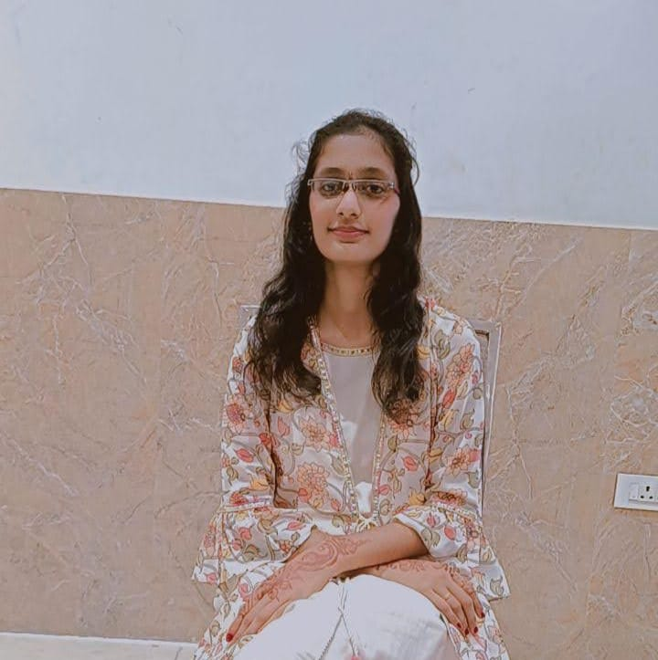

I am Modukuri Gayatri. I am pursuing my Bachelor of Technology in Electronics,Communication and Engineering at Raghu Engineering College.I'm a Quick Learner and I have a Good Communication Skills.I can be a Team Leader because I have experience as a Team Leader in my Final Year Project. I also have Problem Solving Skills and Creative Skills.My Final Year Project is based on Bio-Medical Application using MATLAB,Deep Leaning and Python.I Created a Mini Portfolio Project which describes about me which is available in my Linkedin and Github Profile . I Completed My Virtual Internship in Internpe on Python Programming and another Virtual Internship in Skilldzire on VLSI.My Short-term is to get a secured job and My Long-term goal is to see myself in an Higher position